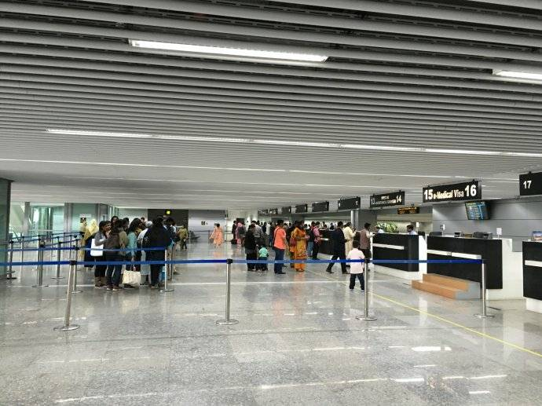
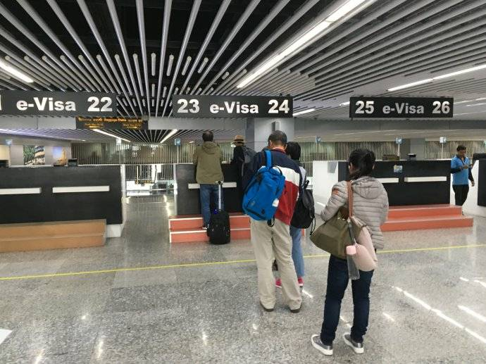
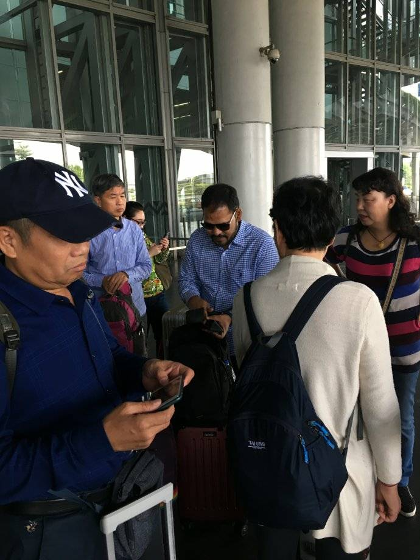
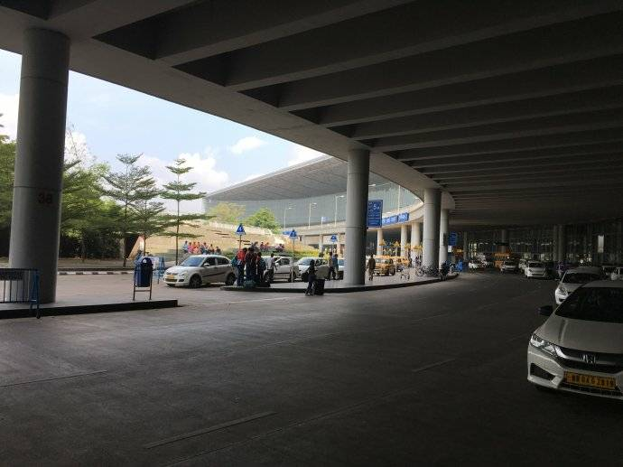

走进印度：加尔各答印象
印度作为一个文明古国，拥有丰富的人文旅游资源；由于众所周知的原因，近几十年来它与我国的交往并不密切，这更增添了它的神秘感。因此，去印度旅游的向往在我的心中萌发并日益清晰和强烈。这一向往终于在上月中旬变成了现实，我随团参加了为期十天的印度旅游。
我们乘中国东方航空公司的国际航班从昆明长水机场出发，直飞印度的东部城市加尔各答。飞机约在上午11时起飞，经过两个多小时的飞行，在当地时间上午11时左右达到了加尔各答国际机场（印度时间比北京时间晚2.5小时）。
与世界上其他的国际机场一样，加尔各答国际机场航站楼也是按照国际标准建设的，现代感十足，但也看不出其特色。
过入境关卡时我们倒是领教了印度特色。入境的外国旅客人数不多，主要是我们这个旅行团的一行25人。两位印度入境检查官不慌不忙地检查每人的护照和签证，并采集指纹。不知道是指纹采集设备性能不好，还是操作人员技能不过关，指纹采集过程总是失败，然后再反复重做。平均每人入境耗时七、八分钟。
  对比泰戈尔故居所体现出的贵族生活场景，穷人的生活愈发显得悲惨。但泰戈尔 “是一个人格洁白的诗人”，“一个怜悯弱者，同情于被压迫人们的诗人”，他以文学作武器，为争取社会公平进行了不懈的斗争。所以，“泰戈尔不仅是对世界文学作出了卓越贡献的天才诗人，还是憎恨黑暗、争取光明的伟大印度人民的杰出代表。”（周恩来评）。
离泰戈尔故居越来越远了，泰戈尔的名句却不断地在我的脑海里浮现：“生如夏花之绚烂，死如秋叶之静美”；“天空没有翅膀的痕迹，而我已飞过…”
- 拯救小风景
- 行万里路
全部评论

微微倾城一笑1992
王老师，等您接下来更精彩的文章
1小时前回复TA
五方元音
不像我们想象的那么落后
2小时前回复TA
领面
赏，最近中国大城市驱赶一些地城生活的人，不和潮流
3小时前回复TA